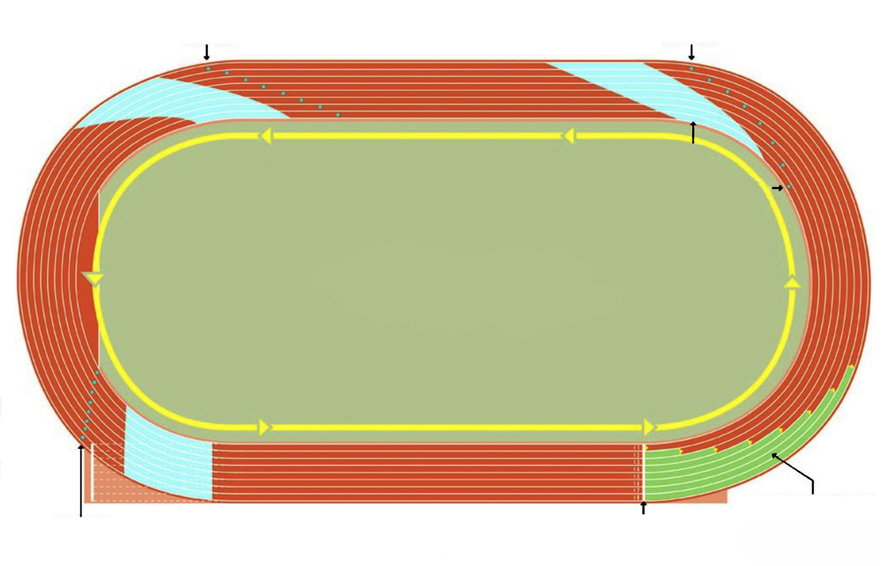

The 4x100 m relay
In 4x100 m relay, the first runner in a team is required to cover a 100 m distance while holding a baton before passing it to the second runner. The second runner will also cover a 100 m distance, the same to the third runner, as well as the fourth runner and completes the race. The 4x100 m requires an athlete to sprint at top speed throughout the race. The non-visual baton exchange is commonly used in this race.
The 4x100 m relay has three change-over zones, each one is 20 m in length. Prior to each change over zone is a 10 m acceleration zone. The sprinters usually place check mark on a precise distance from the start of acceleration zone. In this event, an athlete should be well positioned, have good reaction time at take-off stage and good baton exchanger, as well as good finisher in the finishing stage.

3RD LEG 2ND LEG
EXCHANGE ZONE
ACCELERATION MARK
STAGGERED
4TH LEG START/FINISH START
Figure 5.8: Starting and baton exchange zones in 4x100 m relay
Starting 4x100 m relay
In 4x100 m relay, the starting commands and runner’s positioning are similar to that of 100 m sprints. However, the starting blocks are placed closer to the outer line of the track and the first runner holds the baton between the thumb and index finger enclosed by other fingers. Upon successful start, the runner runs in their assigned lanes. The second, third and fourth runners place a checkmark on their lanes just behind their acceleration zone. The checkmark is for outgoing runners. The start of outgoing runner begins when the incoming runner reaches the checkmark. The distance between the checkmark and starting position is 10 m before the change-over zone. When running inside the change-over zone, an athlete needs to prepare and execute baton exchange